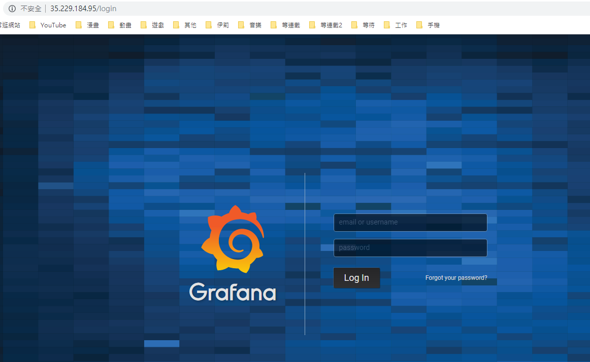
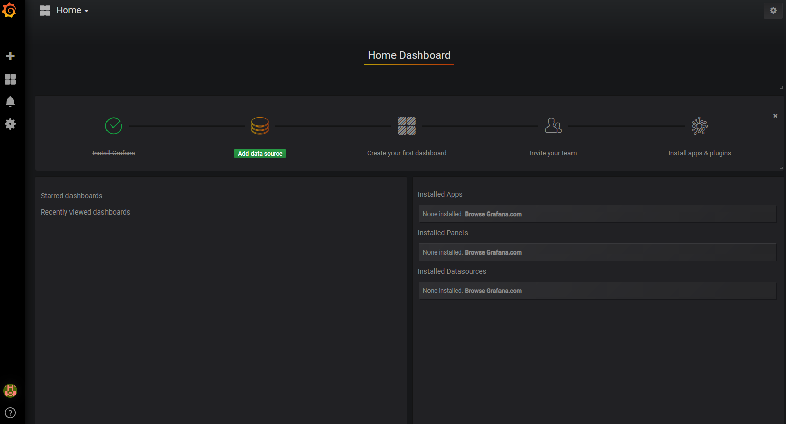

什麼是 Grafana ？
Grafana 是一套開源的監控及分析平台軟體，可支援許多不同的資料來源為其一大特點，從常用的 CloudWatch、Elasticsearch、Graphite、influxDB 到 OpenStack 的 Gnocchi 或 Google Calendar 等，範圍十分的廣泛，管理者不會因為受限於不同的資料來源而必需使用不同的監控軟體。Grafana 具備豐富的面板選擇，除了基本文字、圖表、表格等，管理者亦可使用如甘特圖、流程圖等面板來顯示所監控的資料及訊息，並可由管理者自行調整顯示資料的色彩
什麼是 InfluxDB ？
InfluxDB 是一個由 InfluxData 開發的開源時序型資料庫。它由 Go 寫成，著力於高性能地查詢與存儲時序型數據，InfluxDB 被廣泛應用於存儲系統的監控數據
Grafana 建立，本文章將使用 ubuntu 16.04、grafana：5.2.4、influxdb：1.7.2
一、指令建立 grafana 和 influxdb
前置作業
1 | sudo apt-get update |
安裝 docker
1 | sudo apt-get -y install docker.io |
下載 influxdb 並 run 起來
1 | docker run -d --name influxdb --restart=always -p 8083:8083 -p 8086:8086 -v /data/influxdb:/var/lib/influxdb -e ES_JAVA_OPTS:-Xmx2g -e ES_JAVA_OPTS:-Xms2g influxdb |
參數介紹：
-d：背景執行
-v：持久化，設定容器儲存 LOG 路徑 /var/lib/influxdb 同步一份到我們指定路徑 /data/influxdb
–name：Container 命名
-p：設定 port號
–restart=always：機器重啟後 Container 自動重啟（預設是關閉）
–link：Container 互聯
ES_JAVA_OPTS=”-Xms2g -Xmx2g”：設定記憶體可使用上限
–user root：因為 grafana 在 5.1.0 之前是使用 root 權限 run 起來的，但是在這之後版本沒有這樣做所以要多下一個 –user root 指令
下載 grafana 並 run 起來
1 | docker run -d --name grafana --restart=always -p 80:3000 -v /data/grafana:/var/lib/grafana --user root --link influxdb:influxdb grafana/grafana:5.2.4 |
使用指令查看容器狀態
1 | sudo docker ps -a |
二、使用 docker-compose 建立 grafana 和 influxdb
一開始指令是練習用的，等熟悉後用 docker-compose 可以快速搞定，不需要再一行行指令下
安裝 docker-compose
1 | sudo apt-get -y install docker-compose |
建立 docker-compose
1 | sudo vi docker-compose.yml |
docker-compose 內容
1 | version: "2" |
run docker-compose
1 | docker-compose up -d |
三、測試開啟 grafana 監控頁面
打開網頁輸入機器外網 IP，因為有下 -p 80:3000 指令所以是以 80 port 開啟監控頁面直接打 IP 就可以了，如果沒有要加上 3000
以本篇文章為例 IP 為 35.229.184.95，如果沒用 80 port 開啟 grafana 監控頁面請輸入 35.229.184.95:3000
預設帳密為：admin、admin

測試登入成功後到這邊就建立完成了
